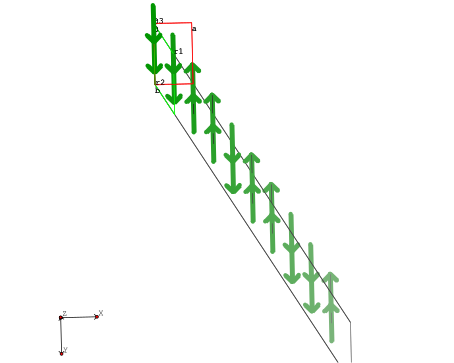

Next: Formalism for going beyond Up: ic1ion - a module Previous: icf1ion - Intermediate Crystal Contents Index
As noted in equation 4, in the case of intermediate coupling, we calculate the single-ion Hamiltonian considering the electron-electron (Coulomb) interaction and the spin-orbit (SO), which are respectively the first24 and second lines of the equation, in addition to the crystal field (CF) interaction which cfield treats.
The term intermediate coupling is somewhat a misnomer, because it does not refer to a
specific coupling scheme to determine the total angular momentum  , such as
Russel-Saunders coupling (
, such as
Russel-Saunders coupling ( -coupling), or -coupling. Rather, it refers the case where all
three of the above single-ion interactions are treated on an equal footing. This is to distinguish
between the practice of using only the lowest energy manifold of levels with the same in either
of the other two coupling schemes to calculate the low temperature (low energy) physical
properties25.
-coupling), or -coupling. Rather, it refers the case where all
three of the above single-ion interactions are treated on an equal footing. This is to distinguish
between the practice of using only the lowest energy manifold of levels with the same in either
of the other two coupling schemes to calculate the low temperature (low energy) physical
properties25.
Finaly in some cases, intermediate coupling, also refers to the narrower case where although the Coulomb and SO terms are included, their strengths are fixed by parameters determined from experimental (optical) spectra, or ab-initio (Hartree-Fock) calculations, rather than being freely varied.
In the case where the Coulomb interaction dominates, and the
spin-orbit interaction is sufficiently stronger than the CF, then only the lowest
energy multiplet - that is, the degenerate energy levels produced by the Coulomb and SO
interactions - need to be taken into account. This multiplet may be determined from Hund's
Rules, and hence we need only calculate the CF interaction (as cfield does). This case is
termed Russel-Saunders or -coupling.
Thus Russel-Saunders coupling corresponds to the limit where
both the Coulomb and spin-orbit interaction are large (but where
), i.e. the crystal field interaction is treated as a perturbation. Only
the lowest energy spin-orbit multiplet is considered, and its degeneracy is split by the CF. These
levels are labeled by the total angular momentum quantum numbers  and 26. This is the case treated in the modules so1ion/cfield, and is
sometimes called the weak field case.
The other limit corresponds to -coupling, where the spin-orbit interaction
dominates
, and there is no term or multiplet structure,
in this case only the single electron total
angular momentum quantum number  serves to label the states.
In between these two limits is thus, intermediate coupling.
serves to label the states.
In between these two limits is thus, intermediate coupling.
In addition to the limits represented by these coupling schemes, the crystal field literature
also introduces several other limiting cases, depending on the strength of the crystal
field. The weak field limit corresponds to -coupling. The intermediate field is
the case where
and this case may be calculated using the icf1ion module,
which ignores
, and treats only
and
within the lowest term  determined by Hund's rules.
determined by Hund's rules.
The strong field limit is where
 dominates even over the Coulomb
interaction. In this case, the crystal field is considered to act first on single-electron states,
splitting the degenerate orbital levels , as dictated by the point symmetry of the
ion (e.g. for a transition metal ion in cubic symmetry this is usually into a doublet
, labelled by the group theoretical irreducible representation of the cubic group,
; and a triplet
labelled ). Electrons may then fill these single
electron crystal field states, and their degeneracy may be lifted by the Coulomb and spin-orbit
interactions. This case is not explicitly considered in the module, but one may calculate the
resulting energy levels by increasing the crystal field above the Coulomb interaction.
ic1ion however, uses the total orbital and spin angular momenta as labels for the states, rather
than single-electron angular momenta or irreducible representations, so it is difficult to intepret
ic1ion output in terms of this limit.
dominates even over the Coulomb
interaction. In this case, the crystal field is considered to act first on single-electron states,
splitting the degenerate orbital levels , as dictated by the point symmetry of the
ion (e.g. for a transition metal ion in cubic symmetry this is usually into a doublet
, labelled by the group theoretical irreducible representation of the cubic group,
; and a triplet
labelled ). Electrons may then fill these single
electron crystal field states, and their degeneracy may be lifted by the Coulomb and spin-orbit
interactions. This case is not explicitly considered in the module, but one may calculate the
resulting energy levels by increasing the crystal field above the Coulomb interaction.
ic1ion however, uses the total orbital and spin angular momenta as labels for the states, rather
than single-electron angular momenta or irreducible representations, so it is difficult to intepret
ic1ion output in terms of this limit.
Finally, ic1ion may be used in the general case, where all the three main
single ion interactions are considered with variable strengths
 , but may also specifically refer to
the situation in which the strengths of the Coulomb and spin-orbit interaction is fixed by
parameters determined either from experimental (optical) spectra or ab-initio (Hartree-Fock)
calculations. If the CF interaction is relatively weak, there will still be a multiplet structure
but the eigenstates of the system is a mixture of the -basis states (due to the SO interaction),
with only being a good quantum number which can be used to distinguish the states. In the case
of a large CF interaction, however, J-mixing can occur, which results in the lost of a
distinct multiplet structure.
, but may also specifically refer to
the situation in which the strengths of the Coulomb and spin-orbit interaction is fixed by
parameters determined either from experimental (optical) spectra or ab-initio (Hartree-Fock)
calculations. If the CF interaction is relatively weak, there will still be a multiplet structure
but the eigenstates of the system is a mixture of the -basis states (due to the SO interaction),
with only being a good quantum number which can be used to distinguish the states. In the case
of a large CF interaction, however, J-mixing can occur, which results in the lost of a
distinct multiplet structure.
The operators corresponding to each of the three single-ion interactions are calculated as matrices
using -coupling basis states, which are labelled according to a group theoretical
classification. This is to facilitate the use of coefficients of fractional parentage (cfp)
in the calculation of the matrix elements. These coefficients allow states of given configuration
 to be determined by the states of a parent configuration with one fewer electron.
That is, we express the
electron state
as a sum,
, over all possible ways of
adding a single electron
to a the
state,
,
where
is the cfp. We also use the results that a single-particle
operator,
to be determined by the states of a parent configuration with one fewer electron.
That is, we express the
electron state
as a sum,
, over all possible ways of
adding a single electron
to a the
state,
,
where
is the cfp. We also use the results that a single-particle
operator,
 , acting on
, acting on  electrons is just times the same operator
acting on one electron,
, to expand the states (and matrix element) in
terms of the cfp's,
electrons is just times the same operator
acting on one electron,
, to expand the states (and matrix element) in
terms of the cfp's,
Once the cfp are known, only the single electron matrix element is needed to be determined for each particular operator. This is generally a straigtforward task. The cfp are also dependent on the classification of the states for which they are constructed, but the advantage of the use of a classification based on group theory is that we can use Racah's theorem [43]27, to factorise the cfp into terms involving only pairs of quantum numbers labelling the states, rather than all the quantum numbers together. Because of the properties of the groups from which they derive, most of these factors do not have explicit algebraic formulae28. However they make a chain calculation of the cfp from a single electron state practicable. These calculations were carried out in the atomic spectroscopy community in the 1950's and '60's and tabulated in the works of Racah [43], Wybourne [44], Allison and McNulty [45]29, and Nielson and Koster [46].
The LS-coupling basis states are tabulated by Nielsen and Koster [46], and the formulae for the matrix elements are from Racah [47,48,49] and Judd [50].
Finally expressions based on the above equation for the matrix elements of the spin-orbit and crystal field operators were derived by Elliot, Judd and Runciman [51]30. For the Coulomb interaction, we have chosen to use the operators defined by Racah [43]31. In the case of the rank-1 spin and orbital angular momentum operators, an explicit algebraic expression exists for the sum over cfp in the above equation [50]32, resulting in the equations quoted by Chan and Lam [53].
The interested reader will find much more details in the books by Judd [50] and Wybourne [54], and for the more mathematically inclined, in the lecture notes of Racah [55]. In addition, this group theory approach was used to determine the neutron cross-sections in a series of papers in the 1970's and 1980's by Balcar and Lovesey, and summarised in their books [32,56].
Finally, the Slater and spin-orbit integrals which parameterise the strength of the Coulomb and SO interactions (these are the radial integrals, whereas what we have calculated using the above techniques is effectively the angular parts of these operators), are tabulated in various books. In particular we have used the experimentally determined values given by Abragam Bleaney [57], Griffith [58] and Chakravarty [59] for the transition metal ions, and by Carnall et al. [60,61] for the rare earths. Other relevant literature are the famous papers by Racah [47,48,49].
We now list formulae for the matrix elements of the principal operators used in ic1ion as they are programmed in:
[Coulomb electron electron interaction operator:]
The denominatorwas expanded as a multipole series in terms of spherical harmonic functions , which are in turn related to the tensor operators of the electron. The radial dependence of the electron wavefunction is then embodied in the Slater integrals, , whilst the angular part is given by the Slater operators , and
runs through even integers from 0 to . In the case of
-electrons we use Racah's operators,
which are linear combinations of which transform according to specific irreducible representations of the group SO(7). This means that their matrix elements are more straightforward to calculate. The relation between these operators and , and their matrix elements are given by Racah [43]. For
- and
-electrons the operators are used directly, from tabulated matrix elements given by [46].
[Spin-orbit interaction operator :] Eqn 16 from Elliot, Judd and Runciman [51].
[Crystal field interaction:]
The crystal field interaction is given by the electrical potential produced according to Coulombs law by neighbouring chargesat positions acting on n electrons.
The crystal field is rewritten in terms of tesseral harmonics(see appendix F)
we define crystal field parameters
and rewrite the crystal field as
 (142)
(142)
Defining rescaled tesseral harmonics as
| (143) | ||||
| (144) |
and Wybourne parameters as
| (145) | ||||
| (146) |
the crystal field may be rewritten as
 (147)
(147)
In order to calculate the crystal field Hamiltonian matrix, we replace the tesseral harmonic functions by the tensor operators which transform in the same way as the tesseral harmonics under the action of the rotation group SO(3). That is, the action of the operator on a wavefunction is the same as that of the functions on the coordinates . The are expressed in terms of similar operators (which transform in the same way as spherical harmonics) as:
and the matrix elements of these operators are given by
with the single electron matrix element
[The magnetic moment operators, and :]
The orbital and spin operators have the same dependence on , due to the Wigner-Eckart theorem:
 |
(151) | |||
|
(152) |
where the reduced matrix elements are:
Using this the Zeman interaction can be written as